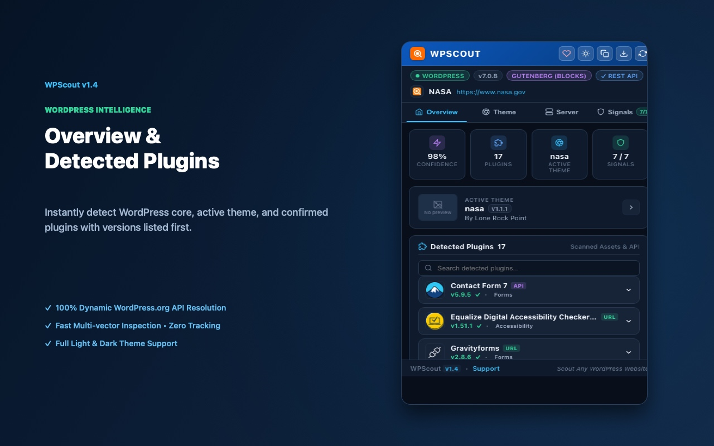

Instant deep stack inspection, verified plugin discovery via REST API namespaces, theme inheritance, server & CDN architecture, real-time HTTP cache status, and DNS resolution. 100% client-side privacy.

Everything you need to inspect, audit, reverse-engineer, and debug any WordPress installation without logging in.
Accurately identifies whether a site is built with WordPress, detects exact core version, compares against the latest release via the official WordPress API, and notes Gutenberg editor integration.
Unlike surface scanners that only read HTML asset URLs, WPScout probes WordPress REST API namespaces (/wp-json and ?rest_route=/) to discover hidden background plugins.
Inspects response headers to diagnose real-time page caching status. See instantly if you are viewing a freshly generated page or a cached edge delivery.
HIT, MISS, BYPASS, DYNAMICUncover the infrastructure layer powering the website. Identifies underlying web servers, proxies, and managed hosting platforms.
Resolves domain Host IP (A record) and Authoritative Nameservers (NS records) securely via Google DNS-over-HTTPS without exposing user queries.
Zero guessing. WPScout checks 7 distinct signals before confirming WordPress presence, and lets developers export formatted reports in seconds.
Click the sample targets below to see how WPScout analyzes and breaks down real-world WordPress architectures in real time.
Compact, distraction-free popup window designed to match modern developer workflows.
See how WPScout compares to generic multi-technology detectors and legacy web tools.
| Feature Capability |
WPScout
|
Generic Detectors (Wappalyzer) | Web-Based Detectors (BuiltWith) |
|---|---|---|---|
| REST API Namespace Probing Detects background plugins with zero frontend assets |
✓ Deep REST Scanning | ✕ Assets only | ✕ Historical DNS only |
| Real-Time HTTP Cache Inspection Live HIT / MISS / BYPASS detection |
✓ Live Response Analysis | ✕ Static tags only | ✕ None |
| Theme Child/Parent Inheritance Detects parent theme and preview screenshots |
✓ Full Hierarchy + Preview | ~ Partial name only | ~ Outdated registry |
| 7-Signal Verification Matrix Eliminates false positives with multi-vector proof |
✓ 7-Point Checklist | ✕ Single regex match | ✕ Crawl heuristics |
| DNS-over-HTTPS & Nameservers Live A & NS record resolution via Google DoH |
✓ Built-in Google DoH | ✕ None | ✓ Behind paywall |
| 1-Click Developer Markdown & JSON Instant copyable diagnostic payloads for tickets |
✓ Markdown, TXT & JSON | ✕ Pro plan required | ✕ Paid exports |
| Privacy & Zero Telemetry Runs 100% inside your browser with no tracking |
✓ 100% Client-Side | ✕ Tracks browsed sites | ✕ Stores search logs |
| Pricing & Accounts Free to use forever with no credit card required |
✓ 100% Free / No Account | ~ Freemium / Sign in | ✕ Expensive subscriptions |
WPScout runs completely on your machine. We believe developer tools shouldn't spy on your browsing habits or monetize your client audits.
WPScout only activates when you open the popup on an active tab. It never logs pages in the background.
Zero tracking pixels, zero analytics SDKs, and zero telemetry payloads. Zero data ever leaves your computer.
Plugin icons are fetched directly from official WordPress.org CDNs or resolved through secure Google DNS-over-HTTPS.
Most WordPress plugins register custom REST API endpoints under /wp-json or ?rest_route=/ (for example: WooCommerce, Yoast SEO, Contact Form 7, Wordfence, WP Rocket). WPScout queries the public REST API index to match registered namespaces against an extensive internal registry, revealing active backend plugins that standard HTML scanners miss.
Yes! If the headless frontend exposes REST API Link headers, WordPress generator tags, or connects to standard WordPress REST endpoints, WPScout's multi-signal engine will verify the WordPress connection and inspect available services.
WPScout provides instant passive detection: the toolbar icon lights up in vibrant blue when the active tab is identified as a WordPress website, and remains subtly dimmed on non-WordPress sites, saving you from clicking unnecessarily.
Yes, WPScout is completely free. There are no paid tiers, no subscription paywalls, no API token limits, and no registration requirements.
WPScout uses standard Manifest V3 permissions: activeTab and scripting to inspect loaded page assets only when you open the popup; https://api.wordpress.org/* to compare version numbers against the official release API; and https://dns.google/* to resolve A/NS records securely via DNS-over-HTTPS.
Join thousands of developers, designers, agencies, and security auditors who rely on WPScout every day.